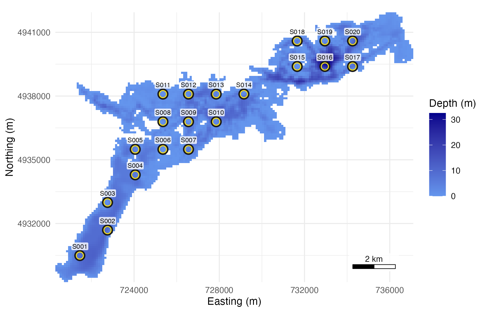
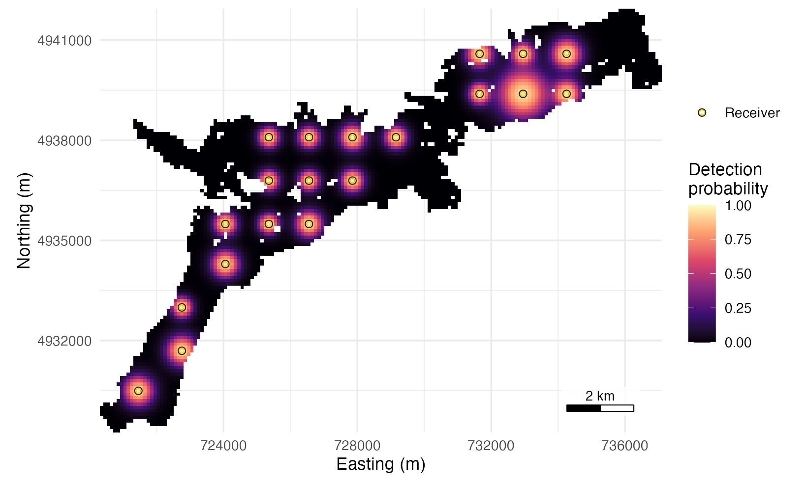
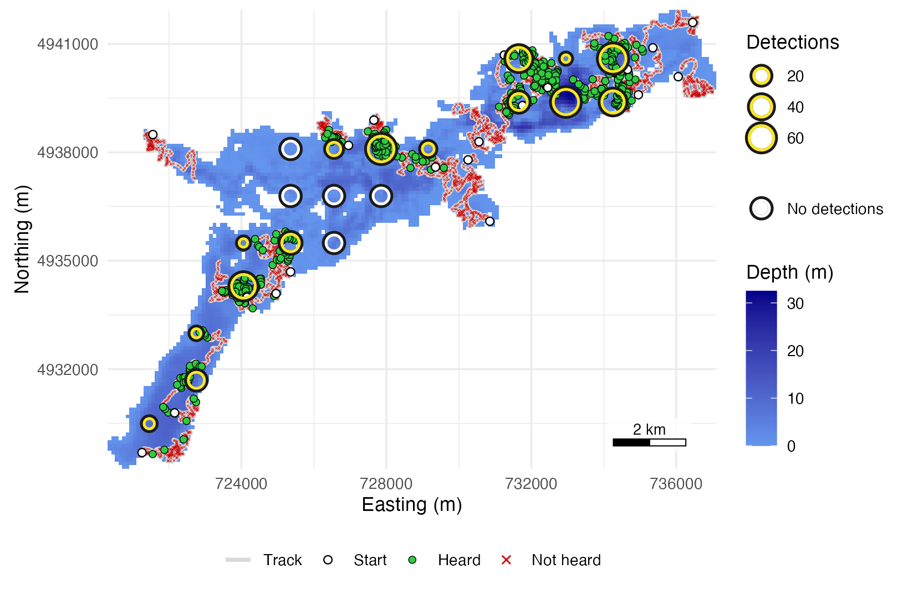
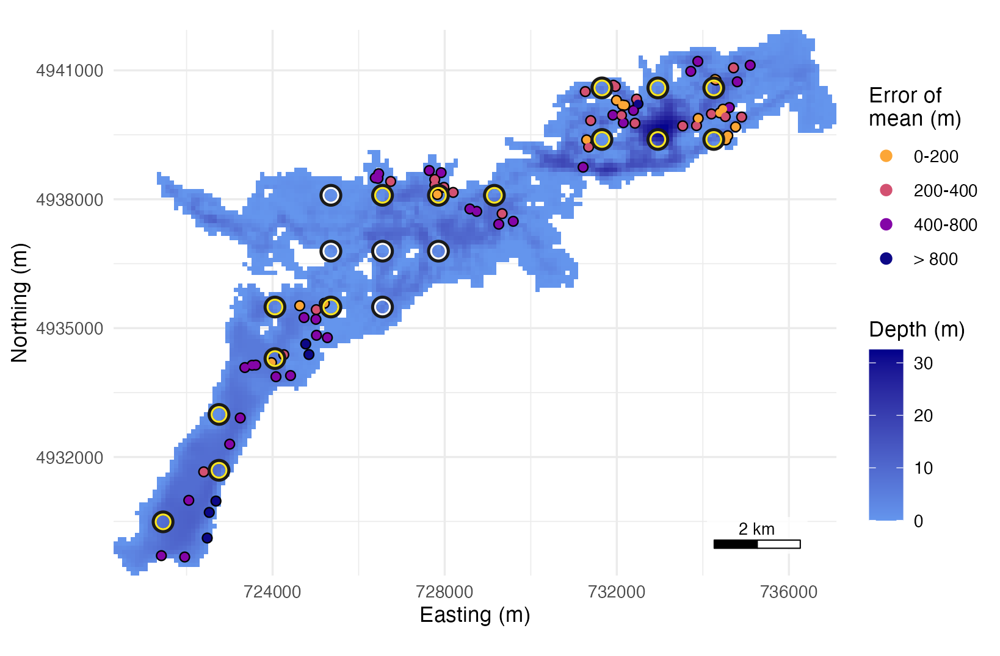

Design and test an array for Stoney Lake
arraydesign.Rmdarraydesign designs acoustic receiver arrays and tests how well a tracking system performs, for a new study or for refining or auditing an array already in the water. It places receivers on a depth raster, maps the share of the water they hear, walks simulated animals through it, and scores the positions estimated from their detections against the true tracks. This page runs it end to end on a 20-receiver array on Stoney Lake, Ontario, the example data included with the package.
Three articles demonstrate further functionality. Design an array for your own water body
starts from your own raster, station lists and range test, compares
candidate layouts and writes the stations for the field crew. Specifying and testing movement models
sets the walk for your species, a behaviour switching model between
moving and resting, and a goal-oriented model with start and end points.
Simulate and score an array step by
step runs each stage of evaluate_array() on its own, as
a table you can inspect or change.
1. Place receivers on Stoney Lake
The depth raster is Stoney Lake at 100 m resolution, with land as
NA and depth as zero or negative metres.
# Load the package, and ggplot2 for the maps
library(arraydesign)
library(ggplot2)
# Read the depth raster included with the package
lake <- terra::rast(system.file("extdata", "stoney_depth.tif",
package = "arraydesign"))
lake
#> class : SpatRaster
#> dimensions : 127, 168, 1 (nrow, ncol, nlyr)
#> resolution : 100, 100 (x, y)
#> extent : 720304, 737104, 4929241, 4941941 (xmin, xmax, ymin, ymax)
#> coord. ref. : WGS 84 / UTM zone 17N (EPSG:32617)
#> source : stoney_depth.tif
#> name : stoney_depth
#> min value : -32.49542
#> max value : 0.00000Receivers go in water at least 1 m deep. terra::ifel()
sets the shallower cells to NA, and
place_receivers() lays a regular grid of 20 receivers over
the rest. It returns their projected coordinates, their latitude and
longitude for the field crew, and the depth under each
(deploy_z). It also places random arrays
(method = "random") and stations you have planned
(method = "manual").
# Set water shallower than 1 m to NA, so that no receiver goes there
deployable <- terra::ifel(abs(lake) < 1, NA, lake)
# Lay a grid of 20 receivers over the deployable water
receivers <- place_receivers(deployable, n = 20, method = "grid", seed = 1)
head(receivers)
#> receiver_serial station_id x y deploy_lat deploy_lon deploy_z
#> 1 R001 S001 721454 4930491 44.49377 -78.21465 8.931593
#> 2 R002 S002 722754 4931691 44.50416 -78.19781 9.132986
#> 3 R003 S003 722754 4932991 44.51585 -78.19724 1.285483
#> 4 R004 S004 724054 4934291 44.52714 -78.18034 6.573844
#> 5 R005 S005 724054 4935491 44.53793 -78.17982 2.934919
#> 6 R006 S006 725354 4935491 44.53752 -78.16348 1.003954
# Print the depth range under the receivers, m
range(receivers$deploy_z)
#> [1] 1.003954 24.834967The receivers sit in 1.0 to 24.8 m of water. plot()
draws the layout on its lake.
# Map the layout over the lake
plot(receivers, lake)
The 20 receivers of the grid on Stoney Lake.
2. Build the detection field and map coverage
The range model gives the probability that a receiver hears one
transmission at a given distance and receiver depth. The detfield
R package, which builds detection fields and positions animals, sets it
in one of two ways. detfield::de_model() wraps a model you
fitted to your own range-test data, and
detfield::de_logistic() makes a stand-in curve from two
distances for a study with no range test. The example uses the stand-in
with assumed values; no range test measured them. It takes the distances
at which 50% and 5% of transmissions are heard (d50,
d05) to be 250 m and 500 m for a receiver 1 m deep and 750
m and 1,500 m at 35 m, interpolated between. Design
an array for your own water body takes a model fitted to your own
range test.
# Set the assumed range model: d50 and d05 for receivers 1 m and 35 m deep
range_model <- detfield::de_logistic(d50 = c(250, 750), d05 = c(500, 1500),
depth = c(1, 35))
range_model
#> <de_model> de_logistic, d50 250/750 m, d05 500/1500 m, depths 1/35 m
#> reads: distance_m, depth_m
#> sigma: station_hour not given
#> blocked line of sight: curve read at the distance through waterdetfield measures the distance through water from
each receiver to each water cell and reads the curve there, so a
receiver does not hear across a point of land.
detfield::de_field() returns the detection field, one
probability per receiver and cell.
# Measure the distance through water from each receiver to each water cell
distances <- detfield::water_distances(lake, receivers)
# Read the curve at each distance: one probability per receiver and cell
field <- detfield::de_field(distances, range_model)
#> 52 of 2,304 receiver-cell pairs with p >= 0.05 have land on the
#> straight line between them; with blocked = 0 the curve is read on
#> them as if the line were clear. See `blocked` in ?de_model.coverage_summary() counts, at each threshold, the cells
that at least one receiver hears on its own (n_cells).
# Count the cells one receiver alone hears at p >= 0.5 and p >= 0.8
coverage_summary(field)
#> threshold n_cells n_water_cells share n_receivers
#> 1 0.5 636 4818 0.1320050 20
#> 2 0.8 180 4818 0.0373599 20The array as a whole hears a cell when any receiver hears the transmission, which takes in cells between receivers that no single one reaches. The chance that one or more receivers hear it is one minus the product of the misses (Pedersen et al. 2014, Methods in Ecology and Evolution 5: 1043-1051, DOI 10.1111/2041-210X.12255).
# Compute the chance that one or more receivers hear, per water cell
array_p <- data.frame(p = 1 - apply(1 - field$p, 1, prod),
terra::xyFromCell(lake, field$cells))
# Count the cells at p >= 0.5 under the array, and all water cells
c(cells_at_0.5 = sum(array_p$p >= 0.5), water_cells = nrow(array_p))
#> cells_at_0.5 water_cells
#> 648 4818The array hears 648 cells (13.4% of the water) at 0.5 or more, against 636 under one receiver alone. Most of the lake lies outside the 50% range of every receiver, so the array hears animals as they pass.
# Take the ring colours of the positionR maps
ring <- detfield::positionr_ring_colours()
# Map the array's detection probability, with the receivers on top as a dark
# ring under a coloured one; the shape scale keys them
ggplot(array_p, aes(x, y)) +
geom_raster(aes(fill = p)) +
detfield::scale_fill_probability(name = "Detection\nprobability") +
geom_point(data = receivers, aes(shape = "Receiver"), colour = ring[["edge"]],
size = 1.3, stroke = 0.9) +
geom_point(data = receivers, aes(shape = "Receiver"), colour = ring[["heard"]],
size = 1.3, stroke = 0.45) +
scale_shape_manual(name = NULL, values = c(Receiver = 21)) +
coord_equal(expand = FALSE) +
labs(x = "Easting (m)", y = "Northing (m)") +
detfield::annotation_scale_bar(location = "br") +
detfield::theme_positionr()
Probability that at least one of the 20 receivers hears one transmission from each of the 4,818 water cells of Stoney Lake, 100 m on a side.
3. Set a movement model
crw_model() builds a correlated random walk from a mean
and standard deviation of step length per time step and a standard
deviation of the turning angle. The walk here moves 30 m a minute with
turns of standard deviation 40 degrees; no species was measured to set
these values. Specifying and testing
movement models sets a walk for your species, a switch between
moving and resting, release points and a goal.
# Build a correlated random walk: gamma steps, wrapped normal turns,
# 60 s a step
walk <- crw_model(step_mean = 30, step_sd = 15, turn_sd = 40, time_step_s = 60)
walk
#> <movement_model> 1 state
#> time step: 60 s
#> source: crw_model(): gamma steps, mean 30 m and sd 15 m per 60 s; wrapped
#> normal turns, sd 40 degrees4. Simulate animals and their detections
evaluate_array() walks the animals from random water
cells, sends their tags’ transmissions at a random delay of 120 to 180
s, gives each receiver one chance to hear each transmission at the
probability of the field, and positions the animals from what was heard.
This is the reference run of the arraydesignR
R package, the point-and-click application of
arraydesign: 20 animals for 6 hours. Simulate and score an array step by
step runs each of these stages on its own. Set
tag_delay in control to the delay of your own
tags, in seconds; the default is 65 to 185 s.
# Simulate 20 animals for 6 hours, detect, position and score them
evaluation <- evaluate_array(receivers, lake, range_model, n_animals = 20,
seed = 1,
control = list(hours = 6, tag_delay = c(120, 180),
movement = walk))
#> 52 of 2,304 receiver-cell pairs with p >= 0.05 have land on the
#> straight line between them; with blocked = 0 the curve is read on
#> them as if the line were clear. See `blocked` in ?de_model.
evaluation
#> <array_evaluation> 20 receivers; 20 animals x 6 hours
#> simulated with: de_logistic, d50 250/750 m, d05 500/1500 m, depths 1/35 m
#> positioned by: binomial grid localization
#> cells at p >= 0.5 under one receiver alone: 636 of 4,818 (13.2%)
#> cells at p >= 0.8 under one receiver alone: 180 of 4,818 (3.7%)
#> cells at p >= 0.5 under the array, any receiver: 648 of 4,818 (13.4%)
#> cells at p >= 0.8 under the array, any receiver: 182 of 4,818 (3.8%)
#> <surface_score> 77 animal-bins of 16 animals; 95% credible regions
#> scored 77 of 120 animal-hours with transmissions (64.2%); hours with no
#> detection are not scored
#> error of the mode: median 402 m, 90th percentile 1077 m
#> error of the mean: median 394 m, 90th percentile 737 m
#> hit rate 0.547: share of the truth inside the 95% regions (a calibration
#> check)
#> 95% interval 0.476 to 0.619 (SE 0.028 clustered by animal, the one-way
#> floor; 16 animals and 6 bin starts; t with 5 df); regions hold 0.952
#> on average
#> median region 440,000 m^2
#> 3.6 s: field 3.3, simulate 0.2, position 0.2, score 0.0The detection rate of an animal is the share of its transmissions heard by at least one receiver.
# Take the transmissions, with the number of receivers that heard each
sent <- evaluation$detections$transmissions
# Compute the share of each animal's transmissions heard by any receiver
rate_per_animal <- tapply(sent$n_detections > 0, sent$path_id, mean)
c(mean = mean(rate_per_animal), median = median(rate_per_animal),
never_heard = sum(rate_per_animal == 0))
#> mean median never_heard
#> 0.1600740 0.1793103 4.0000000Counting the detections of each receiver separates the receivers that heard the animals from those that heard none.
# Count the detections of each receiver; a receiver that heard none counts 0
heard_at <- evaluation$detections$detections$receiver_serial
receiver_counts <- data.frame(
station_id = receivers$station_id, x = receivers$x, y = receivers$y,
detections = as.vector(table(factor(heard_at,
levels = receivers$receiver_serial)))
)
# List the stations that heard none of the animals
receiver_counts$station_id[receiver_counts$detections == 0]
#> [1] "S007" "S008" "S009" "S010" "S011"The receivers that heard none lie in the middle of the lake, where no track came within range in the six hours; the heard transmissions cluster round the rest.
# Take the water cells, with depth as positive metres
water <- terra::as.data.frame(abs(lake), xy = TRUE, na.rm = TRUE)
names(water)[3] <- "depth_m"
# Take the first position of each track, its start
tracks_table <- as.data.frame(evaluation$tracks)
starts <- tracks_table[!duplicated(tracks_table$path_id), ]
# Map the water, the tracks, the misses, the heard transmissions, the starts
# and the receivers, in that order; the colour scale keys the marks
ggplot(tracks_table, aes(x, y)) +
geom_raster(data = water, aes(fill = depth_m)) +
detfield::scale_fill_depth() +
geom_path(aes(group = path_id, colour = "Track"), linewidth = 1.1) +
geom_point(data = sent[sent$n_detections == 0, ], aes(colour = "Not heard"),
shape = 4, size = 0.35, stroke = 0.25, alpha = 0.7) +
geom_point(data = sent[sent$n_detections > 0, ], aes(colour = "Heard"),
shape = 21, fill = "#2ECC40", size = 1.7, stroke = 0.3) +
geom_point(data = starts, aes(colour = "Start"), shape = 21, fill = "white",
size = 1.8, stroke = 0.5) +
scale_colour_manual(
name = NULL, breaks = c("Track", "Start", "Heard", "Not heard"),
values = c(Track = "grey85", Start = "black", Heard = "black",
`Not heard` = "red3"),
# The key draws the cross larger than the map does, so that it reads
guide = guide_legend(position = "bottom",
override.aes = list(size = c(1, 1.8, 1.7, 1.6),
stroke = c(0.5, 0.5, 0.3, 0.6),
alpha = 1))
) +
detfield::layer_receivers(receiver_counts, count = "detections",
size = 3.4) +
coord_equal(expand = FALSE) +
labs(x = "Easting (m)", y = "Northing (m)") +
detfield::annotation_scale_bar(location = "br") +
detfield::theme_positionr()
Tracks of the 20 simulated animals over 6 hours and their 2,884 transmissions. Of the 20 receivers, 15 heard at least one transmission and 5 heard none.
5. Score positions
For each animal-hour with a detection, evaluate_array()
counts the detections per receiver with
detfield::bin_detections(), computes a location surface
with detfield::location_surface(), and measures the
distance from the surface’s mean to the animal’s mean true position in
the hour. The location surface is the positioning method of
detfield: the probability that the animal was in each
water cell in the hour, given each receiver’s count of detections
(?detfield::location_surface; the
model). The hit rate is the mean, over animal-hours, of the share of
the hour’s true positions that fall inside the surface’s 95% region.
Only an animal-hour with a detection can be positioned with a
location surface, here a share of 0.642 of the 120 animal-hours, and the
median error of those scored is 394 m. The hit rate, 0.547, is below
0.95 because a surface assumes the animal stayed in one place for the
hour, and these animals swim about 1.8 km in an hour.
plot() maps the error of each scored animal-hour.
# Map the positioning error of each scored animal-hour
plot(evaluation)
Positioning error of each of the 77 scored animal-hours: the distance from the mean of the hourly location surface to the animal’s mean true position in the hour, drawn at that position.